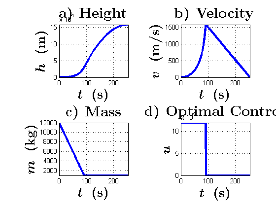

clear all; clf; clc; format long;
global g; g = 9.81;
global b;
global uMax;
global h0; h0 = 0.;
global v0; v0 = 0.;
global m0;
global mf;
m0 = 12000; mf = 1000;
b = 1e-3; uMax = 1.2e5;
tA = 1.;
tB = 500.;
dichotomyFuncTA = dichotomyFunc(tA);
dichotomyFuncTB = dichotomyFunc(tB);
tMed = (tA + tB)/2.;
dichotomyFuncTMed = dichotomyFunc(tMed);
iterDichotomy = 1;
iterDichotomyMax = 1000;
epsDichotomy = 1e-1;
if dichotomyFuncTA < 0 || dichotomyFuncTB > 0
fprintf('Wrong guess times tA and tB! Choose them such that: v(tA) > 0 and v(tB) < 0...\n',iterDichotomy);
else
while ( abs(dichotomyFuncTMed) > epsDichotomy && iterDichotomy < iterDichotomyMax )
if dichotomyFuncTMed > 0
tA = tMed;
else
tB = tMed;
end
dichotomyFuncTA = dichotomyFunc(tA);
dichotomyFuncTB = dichotomyFunc(tB);
tMed = (tA + tB)/2.;
dichotomyFuncTMed = dichotomyFunc(tMed);
iterDichotomy = iterDichotomy + 1;
end
tf = tMed;
tSw = (m0 - mf)/(b*uMax);
if tSw > tf
tSw = tf;
end
fprintf('Switching time tSw = %f\n',tSw);
fprintf('Final time tf = %f\n',tf);
options = odeset('AbsTol',1e-9,'RelTol',1e-9);
[t,x] = ode113(@(t,x) Xdyn(t,x,tf), [0 tf], [h0;v0;m0], options);
subplot(221); plot(t,x(:,1),'linewidth',3);
title('\textbf{a) Height}','interpreter','latex','FontSize',22,'FontWeight','bold');
xlabel('\boldmath{$t$} \ \textbf{(s)}','interpreter','latex','FontSize',20,'FontWeight','bold');
ylabel('\boldmath{$h$} \ \textbf{(m)}','interpreter','latex','FontSize',20,'FontWeight','bold');
xlim([-inf inf]);
ylim([-inf inf]);
grid on;
subplot(222); plot(t,x(:,2),'linewidth',3) ;
title('\textbf{b) Velocity}','interpreter','latex','FontSize',22,'FontWeight','bold');
xlabel('\boldmath{$t$} \ \textbf{(s)}','interpreter','latex','FontSize',20,'FontWeight','bold');
ylabel('\boldmath{$v$} \ \textbf{(m/s)}','interpreter','latex','FontSize',20,'FontWeight','bold');
xlim([-inf inf]);
ylim([-inf inf]);
grid on;
subplot(223); plot(t,x(:,3),'linewidth',3) ;
title('\textbf{c) Mass}','interpreter','latex','FontSize',22,'FontWeight','bold');
xlabel('\boldmath{$t$} \ \textbf{(s)}','interpreter','latex','FontSize',20,'FontWeight','bold');
ylabel('\boldmath{$m$} \ \textbf{(kg)}','interpreter','latex','FontSize',20,'FontWeight','bold');
xlim([-inf inf]);
ylim([-inf inf]);
grid on;
control = zeros(size(t));
for i = 1:size(t)
if t(i) <= tSw
control(i) = uMax;
end
end
subplot(224); plot(t,control,'linewidth',3);
title('\textbf{d) Optimal Control}','interpreter','latex','FontSize',22,'FontWeight','bold');
xlabel('\boldmath{$t$} \ \textbf{(s)}','interpreter','latex','FontSize',20,'FontWeight','bold');
ylabel('\boldmath{$u$}','interpreter','latex','FontSize',20,'FontWeight','bold');
xlim([-inf inf]);
ylim([-inf inf]);
grid on;
end
Switching time tSw = 91.666667
Final time tf = 253.302002
